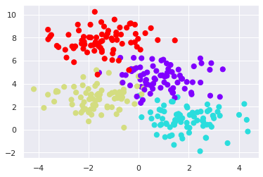
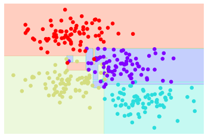
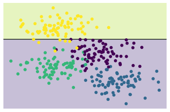
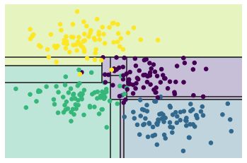
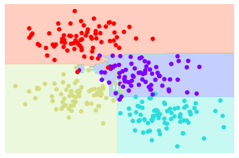

# Experiment 10: Random Forest
This is the report of Experiment 10: Random Forest.
# Purpose
This is a relaxing experiment. In this experiment, we need to complete some requirements according to the experimental instructions, which are about implementing a random forest.
# Procedure and Results
We use make_blobs in sklearn as our dataset, which is a supervised dataset for multi-classifying. The decision tree is also based on sklearn.tree .
The dataset distribution is like this:

# Creating a decision tree
With a row decision tree, we get the classification result like this:

# Decision trees and overfitting
The result is not very well. At the center of the figure, we can see that the decision boundary is not smooth, which means it may be overfitting. In fact, we can control the result by adjusting the depth of the decision tree. The following two figures show the case where the depth of the decision tree is 1 and 5 respectively.


# Ensembles of estimators: random forests
Although we can avoid overfitting by depth control, the loss of features cannot be ignored. In that case, we will use a ensemble learning method, random forests.
sklearn give us a convenient API for bagging classifier. Here is the result.

It's easy to see that RF is much better than a single decision tree. It can generate a robust decision boundary without overfitting.
# Thoughts
The crux of ensemble learning is that how to combine much weak classifiers. But this experiment doesn't care that. I think the key of ensemble learning is the proper feature selection and the decision to aggregate different predictions.
Another important thing I think is that, the idea of ensemble learning can be generalized to many classifier, not only the decision tree.